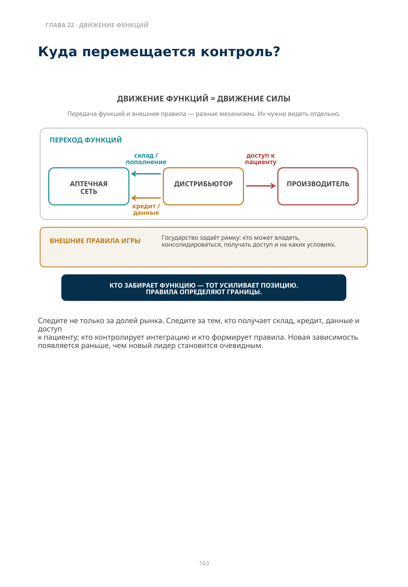

Что должно остаться под нашим контролем?
Как масштабировать преимущество и не потерять его при следующем переходе рынка
К этому моменту руководство должно уже знать две вещи: какое конкурентное преимущество доказано сегодня и какой измеримый экономический результат оно создаёт. Теперь появляется третий вопрос:
Что должно остаться под нашим контролем, чтобы это преимущество не исчезло при масштабировании?
Выручка, количество аптек и размер склада показывают уже достигнутую позицию. Миграция функций показывает процесс, который эту позицию создаёт. Когда аптечная сеть строит собственный склад и начинает покупать напрямую, переход силы начинается раньше, чем дистрибьютор увидит падение выручки. Когда дистрибьютор создаёт ERP/POS-систему, кредит и объединение независимых аптек, зависимость аптек растёт раньше, чем это видно в структуре собственности. Когда государство готовит новые правила, экономика бизнеса может измениться ещё до их формального вступления в силу.
Движение функций часто становится одним из ранних сигналов будущей структуры рынка.
Четыре правила следующего хода: следуйте за функциями, а не названиями; различайте влияние и собственность; считайте данные и государство самостоятельными центрами силы; до агрессивного масштаба докажите механизм преимущества.
Нет универсального следующего шага. Есть следующий шаг этого рынка — на этой стадии его эволюции.
Куда перемещается контроль?
Передача функций и внешние правила — разные механизмы. Их нужно видеть отдельно.
ПЕРЕХОД ФУНКЦИЙ
- ДИСТРИБЬЮТОР → АПТЕЧНАЯ СЕТЬ: склад / пополнение
- ДИСТРИБЬЮТОР → АПТЕЧНАЯ СЕТЬ: кредит / данные
- ДИСТРИБЬЮТОР → ПРОИЗВОДИТЕЛЬ: доступ к пациенту
Следите не только за долей рынка. Следите за тем, кто получает склад, кредит, данные и доступ к пациенту; кто контролирует интеграцию и кто формирует правила. Новая зависимость появляется раньше, чем новый лидер становится очевидным.

Описание схемы
FIG_084: Внешние правила игры
Карточка «Внешние правила игры»: государство задаёт рамку, которая влияет на регистрацию, получение доступа и другие условия рынка. Это ограничения, которые отдельная компания не контролирует напрямую.